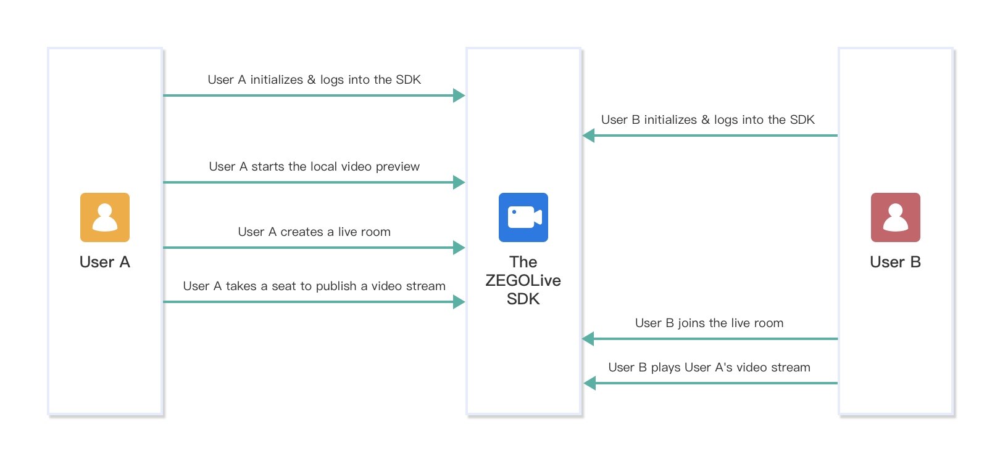

Build a live video streaming
ZEGO Live provides you the capability to build an interactive live streaming application by encapsulating the Express-Video SDK, ZIM SDK, and ZegoEffects SDK. This document describes how to build a live video streaming with the ZEGO Live SDK.
Prerequisites
- Contact us to activate the ZEGO Live service, get the ZegoEffects SDK, and the resources and models that are required.
- Create a project in ZEGO Admin Console. For details, see ZEGO Admin Console - Project management.
Understand the process
The following diagram shows the basic process of creating a live room and a participant (user B) playing a stream published by the host (user A).

Integrate the ZEGOLive SDK
The Server APIs that we used to implement live room related business logic in the ZEGO Live sample app are only for experience and debugging purposes.
To build your own live streaming app, you can refer to ours to design your own business server APIs and replace them in our sample code. For more details about those Server APIs, see Room related Server APIs.
To integrate the SDK, do the following:
- Download the Sample codes, and copy the
ZEGOLivefolder to your project directory. - Add the
Podfilefile to your project directory.

- Open Terminal, run the
installcommand.
1 | pod install |
- Put the ZegoEffects SDK dynamic library, resources, and models you get in the previous step into your project directory.
- In Xcode, select File > Add Files to “xxx” (your project name), and add the ZegoEffects SDK, resources, and models into the project.
- Select TARGETS > General > Frameworks,Libraries,and Enbedded Content, add the
ZegoEffects.xcframework, and then set the Embed to Embed & Sign. - Select TARGET > General > Deployment Info, set it to version 13.0 or later.
Add permissions
Permissions can be set as needed.
- Open Xcode, select the target object, and then click Info > Custom iOS Target Properties.
- Click the Add button (+) to add camera and microphone permissions.

Initialize the ZEGOLive SDK
To initialize the ZEGOLive SDK, get the RoomManager instance, pass the AppID and AppSign of your project.
1 | // Initialize the SDK. We recommend you call this method when the application starts. |
To receive callbacks, set the corresponding delegate to self, or call the addUserServiceDelegate method to listen for and handle event callbacks as needed.
1 | RoomManager.shared.roomService.delegate = self |
Set the resource path
Before implementing the face beautify feature, you will need to put the required resource files to the ZegoEffects SDK. To do so, call the following method and put the path of the resource into it.
1 | let resourcePaths = ["xxx.model", "xxx.bundle"] |
Log in
To access the ZEGOLive service, you must log in first.
1 | let userInfo = UserInfo("YOUR_USER_ID", "YOUR_USER_NAME", .participant) |
Start the local video preview
Before creating a live room to start live streaming, you can call the playVideoStream method to start the local video preview.
1 | // The [userID] can be used to specify which user's view you want to view. |
Create/Join a live room
- You become a Host after creating a live room, and you can take a seat and start live streaming upon creating.
- You become a Participants after joining a live room, and you can watch the live streaming and be a co-host to interact.
To create a live room, call the createRoom method.
1 | let rtcToken: String = "YOUR_RTC_TOKEN" |
After a live room is created, to start live streaming, the host will need to call the takeSeat method to speak. And the SDK automatically publishes the streams when the host takes a seat successfully.
1 | RoomManager.shared.userService.takeSeat { result in |
To join a live room, call the joinRoom method.
1 | let rtcToken: String = "YOUR_RTC_TOKEN" |
After joining a live room, for a participant to watch the live streaming, he will need to call the playVideoStream method to play the host’s published streams.
1 | // The [userID] can be used to specify which user's view you want to view. |
Send/Receive text chat messages
To send text chat messages in the room, call the sendTextMessage method.
1 | RoomManager.shared.messageService.sendTextMessage("MESSAGE_CONTENT") { result in |
To receive the text chat messages, listen for the callback receiveTextMessage.
1 | func receiveTextMessage(_ message: TextMessage) { |
Leave a live room
Before the host leaves the live room, he will need to call the leaveSeat to leave the seat first. And the SDK automatically stops publishing streams when the host leaves the seat successfully.
1 | RoomManager.shared.userService.leaveSeat { Result in |
To leave the live room, call the leaveRoom method. And the SDK stops all the stream publishing and playing operations simultaneously.
1 | RoomManager.shared.roomService.leaveRoom { Result in |
Log out
To finish the ZEGOLive service, call the logout method.
1 | RoomManager.shared.userService.logout() |
Deinitialize the ZEGOLive SDK
To deinitialize the SDK to make it uninitialized, call the uninit method.
1 | RoomManager.shared.uninit() |